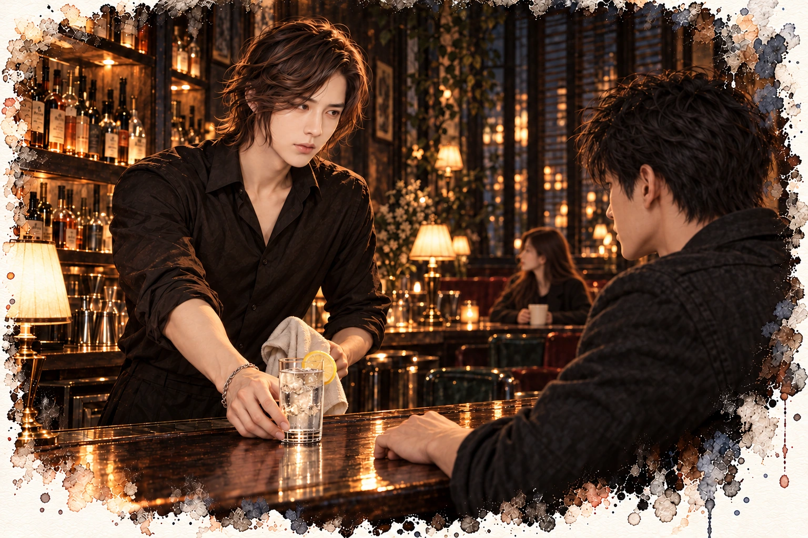

沒有招牌的酒吧 · 第一部
第三章 一杯檸檬水

我站在門口，沒有開燈。先看門鎖，完好。再看地板，腳架的壓痕還在，睡袋的位置沒變。筆記本翻開的頁數，跟我離開的時候一樣。
他進來過。杯墊壓著筆記，旁邊就是他的照片。
東西幾乎都在原位。這位調酒師翻完我的家當，還知道替我收好。
垃圾袋被動過。空藥盒在最上面，我丟的時候它壓在底下。
連垃圾都翻，這服務未免太周到。
我拿起那張杯墊，翻過來，又翻回去。深綠色，厚紙，邊緣壓著一圈細紋。挑釁別人還顧得到品味，這種人通常很難搞。
這種邀請不能不去。不去，等於承認我是來查他的。去了，至少還能繼續演我的攝影師。
而且說真的，我很想看看，一個會開別人門鎖的調酒師，倒酒的手長什麼樣子。
我把杯墊收進口袋。
左邊視野的邊緣，又亮了。
最後一顆藥，昨天已經吃掉了。
藥局的門開了，提示音小得幾乎聽不見，我這次才注意到它的存在。上次頭痛得要命，什麼都沒注意。
溫寧在櫃檯後面，抬頭看我。
頭髮剪到下巴，深棕色，髮尾自己捲起來，有幾撮翹向不同的方向，大概是早上沒空吹。臉小，很白，眼睛細細長長的。
她沒有笑。我猜她笑起來，眼睛會彎成兩道。這個猜測，我打算找機會驗證。
白袍裡面是一件燕麥色的針織衫，袖子推到手肘。沒有耳環，沒有手鍊，沒有手錶。鞋子是軟底的，她從櫃檯一頭走到另一頭，一點聲音都沒有。
她身上，沒有任何會響的東西。
我做這行，第一件學的就是注意別人身上少了什麼。上次只顧著頭痛，蠢到家。
她沒有問我需要什麼。
「你是不是，」她說，「先看到閃光，才開始痛？」
我停在櫃檯前。
這位藥師，開場就先把我的底牌翻了。
「你的眼睛一直往右偏。」她說，「左邊看不清楚，對不對？」
「對。」
「多久了？」
「很多年。久到我跟它都熟了。」
她沒笑。行，我本來也沒指望。
她從架上拿下一盒藥，這次不是最小包，是一般包裝。但她沒有推給我，手壓在盒子上。
「這叫有先兆的偏頭痛。」她說，「先看到光、看到鋸齒、視野缺一塊，然後才痛。你上週買，這週又買，這種頻率吃止痛藥，痛不會變少，只會變多。吃太密，藥本身會變成頭痛的原因。」
「所以妳上次給我最小包，是在救我。」
「是在提醒你。」
她從櫃檯下面抽出一張便條紙，寫了幾個字，撕下來，壓在藥盒上。一間神經內科的名字和地址。
「去看醫生。有些藥是用來預防的，不是等痛了才吃。」
我拿起藥和紙條。
紙條我沒有丟。這種字跡，丟了可惜。
結帳的時候，我在看她。
她的手機放在櫃檯邊，螢幕朝下。剛剛震了兩下，沒有鈴聲。店門的提示音小得幾乎聽不見，藥局裡沒有放音樂。
我站在櫃檯前，連冰箱運轉的聲音都聽得清楚。
還有上次，鑰匙掉在地上的那一聲。她抓住櫃檯邊緣，指節發白。
不是普通的被嚇到。
這個人，整個生活都繞著聲音在設計。
「妳上次，」我說，「是被嚇到嗎？」
她把找的錢放在我手心，抬頭。表情沒有變，好像沒聽見那個問題。
「你該上樓了。」她說，「有人在等你。」
我走出藥局，站在樓梯口。
她怎麼知道，有人在等我？
我還以為這條巷子裡，只有我一個人在偷看。
敘事視角江澈

十點四十分，一杯冰水，一片檸檬十點四十分，樓梯有腳步聲。
攝影師推門進來，先看的不是我，是最裡面那一格。林棠背對門坐著，手裡捧著陶杯，他的視線在她背上停了一秒左右，才轉到我這裡。
我記下了。
他在吧檯中間坐下，正對著我。
「第一杯，」我說，「我請。」
「我偏頭痛，不喝酒。你的酒再好，我也只能聞。」
「那就不給你酒。」
好酒我本來就沒打算浪費在他身上。我拿了一只高杯，丟冰塊，倒水，切一片檸檬卡在杯緣，推過去。
他盯著那杯水，沒動。我把手上的杯子擦完放回架上，懶得催。換作是我，也不會隨便喝一個剛翻過我房間的人倒的水。
最後他還是喝了。
「照片拍得不錯。」我說。
「你很上鏡。」
「那天光線好。」
「你那扇窗角度好。」
我繼續擦杯子。店裡只剩林棠跟他，唱片轉到第二面，聲音壓得很低。
「你常拍夜景？」
「我常等人。」
「等到了嗎？」
「還在等。」他喝了口水，「你呢？開一間連招牌都不掛的店，總不會是在等客人。」
「我在等人回家。」我說，「每個來這裡的人，最後都要回家。」
他沒接話，就那樣看著我。我也沒移開。
這種講法我以前在別的地方用過，對面坐的是別的人。沒有一句能照字面聽。他要問的不是這間店，我想知道的也不是他拍什麼，可是誰先講白，誰就輸了。
他的手平放在吧檯上，不敲，也不動。那種靜是練出來的，只可惜嘴巴沒跟著練。他挑的位子，門和窗都在視線裡，坐下之前還先掃了一眼出口。攝影師不需要這種習慣。
我也不比他高明。房間都讓他知道我進過了，人還站在這裡倒水給他。我們兩個做的是什麼，大概都瞞不了對方多久。
角落裡，林棠把陶杯放回桌上。他的眼睛往那邊偏了一下，很快，我要不是一直在等，根本看不到。
嘴上說在查我，眼睛卻一直在顧別人。
十一點十五分，他站起來，放了一張名片在吧檯上。
「自由接案攝影師。」他說，「有需要，可以找我。」
「我這種人，不太需要拍照。」
「每個人都需要一張好看的照片。」他說，「有一天會用得到。辦喪事的時候特別需要。」
「那你先替自己拍一張。」
他推門走了。
我拿起那張名片翻過來，背面空白。我把它塞進收銀機下面那一格，那裡已經壓了好幾張名片，每一張都是假的。
他這張印得最好。
那兩個男人講話的樣子，很像兩隻貓在同一個屋頂上。尾巴都沒動，身體都沒動，但誰都沒閉眼。
我拍過很多吵架的戲，大吼、摔東西、甩門。那些都很好演。
這種不吵的，最難。
陸曜走的時候，經過我的位置，沒有停，也沒有看我。但他的腳步在我旁邊慢了半拍。
我不知道那是什麼意思。
回到家，十二點多。手機響了，是經紀人。
「初稿出來了！」她的聲音很高，「公司超喜歡，說妳像換了一個人，整組很有故事感。那個攝影師果然很貴，但值得。」
「嗯。」
「不過，」她話鋒一轉，「臉有點圓了。下次拍之前，再少吃一點。」
「好。」
電話掛了。
我坐在沙發上，想起那碗粥。半碗，換到一句臉有點圓了。
冰箱裡還有那盒蛋，我沒打開。胃在叫，我假裝沒聽見。
外套口袋鼓起一小塊，是那包奶油餅乾。拿出來，包裝被我壓了好幾天，皺巴巴的，裡面大概碎了一半。
我捏著它，包裝紙沙沙響了好幾次，又把它放回去。
我躺回床上，膝蓋彎起來，雙手抱在腦後。
昨天是一百一十下。
臉有點圓了。
那就兩倍。
這次不只是坐起來。左手肘去碰右膝蓋，躺回去，右手肘去碰左膝蓋。一邊一下，像在騎一台看不見的腳踏車。網路上說，這樣連側邊都瘦得到。
一、二、三。
臉有點圓了。
她講這句的時候，前面才剛說超喜歡。
數到二十幾，我發現我數的不是數字，是那句話。左邊一次，右邊一次，它就在耳朵裡講一次。臉有點，圓了。剛好兩拍，跟我扭過去、扭回來一模一樣。
我想把它關掉，就去想吃的。雞皮。
說好不吃，那就想多一點。反正想的不會胖。
可是今天想到一半，畫面不對了。那塊雞皮在我腦子裡金黃的、冒著油，我咬下去，下一格跳出來的是公車站的燈箱。我的臉放得很大，對著等車的人笑，臉頰那裡鼓起一小塊。
我嚇得停住。
連想都不行了嗎？
我做完了。兩百二十。
抬腿的時候，我想起一個。
豆花，加粉圓跟花生，淋黑糖水。夏天要冰的，冬天要熱的。
我小時候最愛吃的。那時候吃完一整碗，沒有人說我臉圓。
我抬著腿停在半空，想那碗豆花想到忘了數。大腿開始抖，我放下來，再抬起來，一直抬到腿落回床墊彈了一下，我都沒有感覺。
纖體霜塗了兩層。我沒有開燈。
掌心貼著肚子，順時針一圈一圈推開。廣告說要按摩到吸收，線條才會緊。推到心窩下面時那裡被壓到，抽了一下。
我沒有停。
涼到有一點刺。
然後我開始找。
指尖沿著肋骨下面往下滑，找那兩條線。
好像在，又好像比昨天淺。
我分不出來。沒開燈，也看不見，只能用手摸，可是摸起來也沒把握。
我把手往下移，移到肚臍下面。那裡沒有東西可以壓。我把手掌橫放在小腹上。兩邊先碰到的是骨盆，中間空著。
掌心往下貼，才碰到那層皮膚。薄薄的，跟著呼吸動。
我躺平的時候，這裡是一個窪。什麼時候變成這樣的？上個月就這樣了嗎？還是一直都是，我今天才發現？
我還是往下壓。
指腹陷進那個窪裡，很快就到底了。底下有東西在跳。
咚。咚。咚。
我的手停住。
是心跳。從肚子裡面傳上來，貼著指尖，一下一下，清楚得不像話。
中間好像什麼都沒有隔著。
肚子裡面摸得到心跳，正常嗎？還是每個人躺平壓下去都摸得到，只是沒有人會去壓？
我應該要怕的。
可是我腦子裡想的是：那這樣，臉為什麼會圓？
我換一個地方，再壓。還是骨頭，還是那個跳。
「臉有點圓了。」
我停住。
最後那個「了」字，從我嘴裡輕輕落下來。
我竟然也開始這樣說自己了。
凌晨兩點，我醒來去廁所。
站起來的時候頭有點暈，我扶著洗手台，等它過去。我沒開大燈，只開了鏡子旁邊那盞小的，太亮會醒得更徹底。
上完大號，沖水之前，我低頭看了一眼。
顏色好像比平常深。
我湊近一點看，小燈是黃的，照下去什麼都偏暗，我分不出來是燈的關係，還是真的比較深。
我想了一下昨天吃了什麼。半碗粥，一杯薑茶，早上一杯黑咖啡。咖啡會不會？應該會吧，喝那麼濃。
我按下沖水鍵，水轉了一圈，就不見了。
我洗手，洗得很仔細，連指縫都搓過。鏡子裡的人臉色很白，我對她點頭，她也對我點頭。
回到床上，我把被子拉到下巴，肚子上還留著一點涼。鬧鐘設七點，想了一下，改成六點半。今天臉色不好，要多留點時間上妝。
我閉上眼睛，很快就睡著了。
睡得很好。

他從那扇門出來，在門口站了一下，雙手插進口袋，走過巷子。
經過店門口時，他沒有看我。我把視線收回報紙上。
今天晚上九點多，他下樓倒垃圾。倒完沒有馬上上去，站在樓梯口，看了一眼對面三樓那扇窗，才轉身。
十點半，那個攝影師走進來。
他掏錢的時候，外套口袋裡露出一角深綠色的厚紙。
樓上酒吧的杯墊。我撿過好幾張，都是客人喝醉了，掉在樓梯上的。
一個人早上從對面那棟樓走出來，晚上又站在樓梯口看那扇窗。另一個人的口袋裡，放著他店裡的杯墊。
我不知道他們之間是什麼事。
我只知道，樓上那個人今晚的唱片，放得比平常小聲。
十一點五十分。
我在收最後一批處方箋。店裡沒有人，巷子也安靜，樓上偶爾漏下一點音樂，今晚是爵士。
門開了。
一個男人走進來，四十多歲，平頭，黑色夾克。他沒有走向任何一排架子，直接站到櫃檯前。
「請問，」他說，「樓上那間酒吧的老闆，住這附近嗎？」
「不知道。」
「你們是鄰居，不熟嗎？」
「不熟。」
他笑得很客氣。他沒有再問，但也沒有馬上走。他在看店裡的每個角落，門、窗、監視器的位置。
然後我注意到他的夾克。
右邊腰側，下擺的形狀不太對。布料被撐出一個硬的角度，像底下有什麼東西。
我沒有看第二眼。
「還需要什麼嗎？」我說。
「不用。」他說，「謝謝。」
他推門出去了。
我站在櫃檯後面，手放在桌上，等自己的心跳。它沒亂，一下一下照原本的速度走。
十二點。打烊。
我關掉一半的燈，走到門口拉鐵捲門。
這個鐵捲門有電動按鈕，按下去它會自己降下來。但它很吵，軸承老了，會發出很長一段刺耳的摩擦聲。
我從來不按那個按鈕。我都用手，慢慢拉。
拉到一半的時候，我從鐵捲門下面的縫往外看。
那個男人沒有往巷口走。
他站在樓梯口，抬頭看了一下二樓的窗，然後轉身，一步一步，上樓了。
我的手停在鐵捲門上。
鐵捲門停在一半。